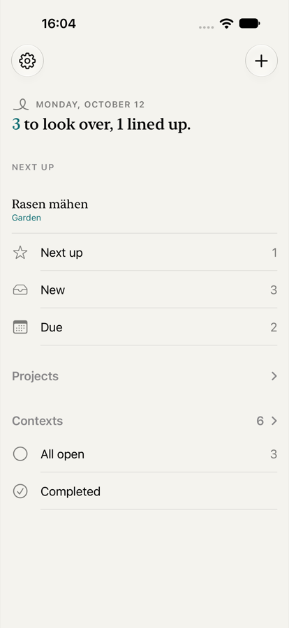
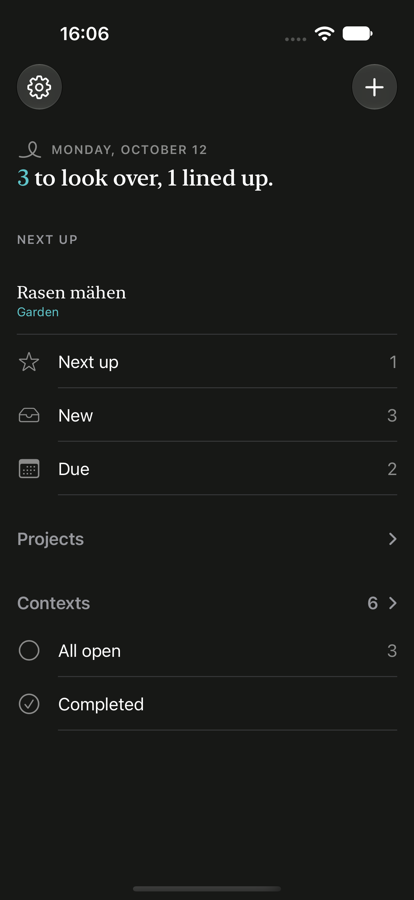

Links der heutige Stand aus dem Simulator, daneben Entwurf A (Empfehlung) und Alternative B. Die Telefone zeigen die echten App-Farben: Papiergrund, Petrol als Akzent für alles Tippbare, Rot nur für Zeitdruck, Grau für Hierarchie. Symbole sind hier Nachbildungen; in der App stehen SF Symbols.
Simulator, iPhone 17 Pro, englische Oberfläche, drei frisch erfasste Aufgaben, eine davon vorgemerkt. „Next up“ steht dreimal: im Satz, als Vorschau und als Zeile. Heute fällig ist hier nichts, deshalb fehlt die zweite Vorschau.

Hell
DunkelOben die Eingangsleiste (nur wenn etwas in „Neu“ liegt), dann „Jetzt“ mit höchstens fünf Zeilen, dann die Chips, unten „Alle Ansichten“ als graues Zwei-Spalten-Raster.
„Jetzt“ mit zwei Unterzeilen (Zeitdruck, Vorgemerkt) und ohne Obergrenze, Chips in einer seitlich scrollenden Zeile, „Alle Ansichten“ als ausklappbare Liste wie heute, nur kleiner.